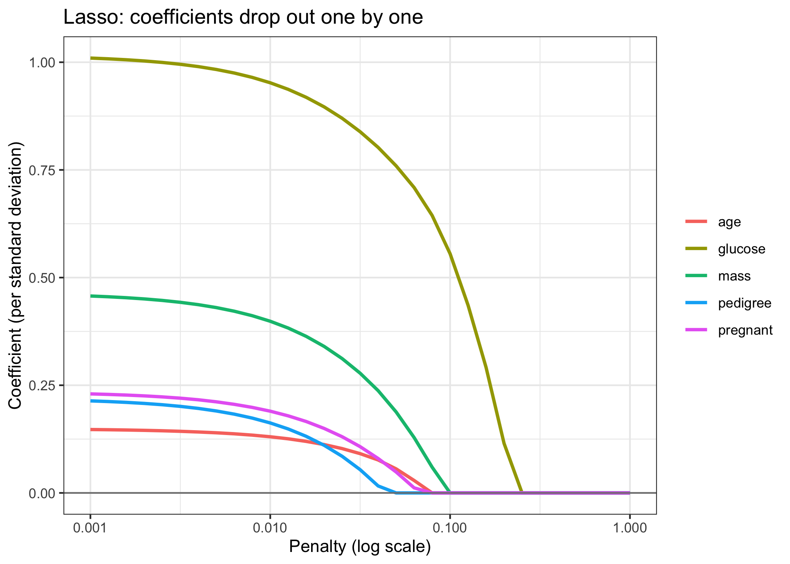
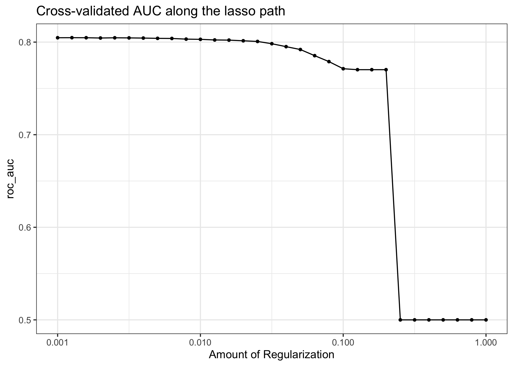
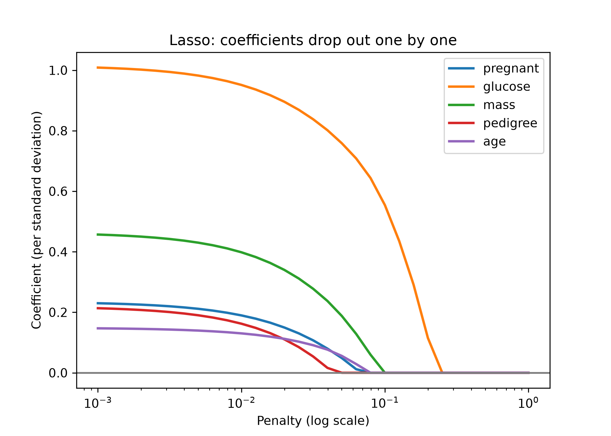
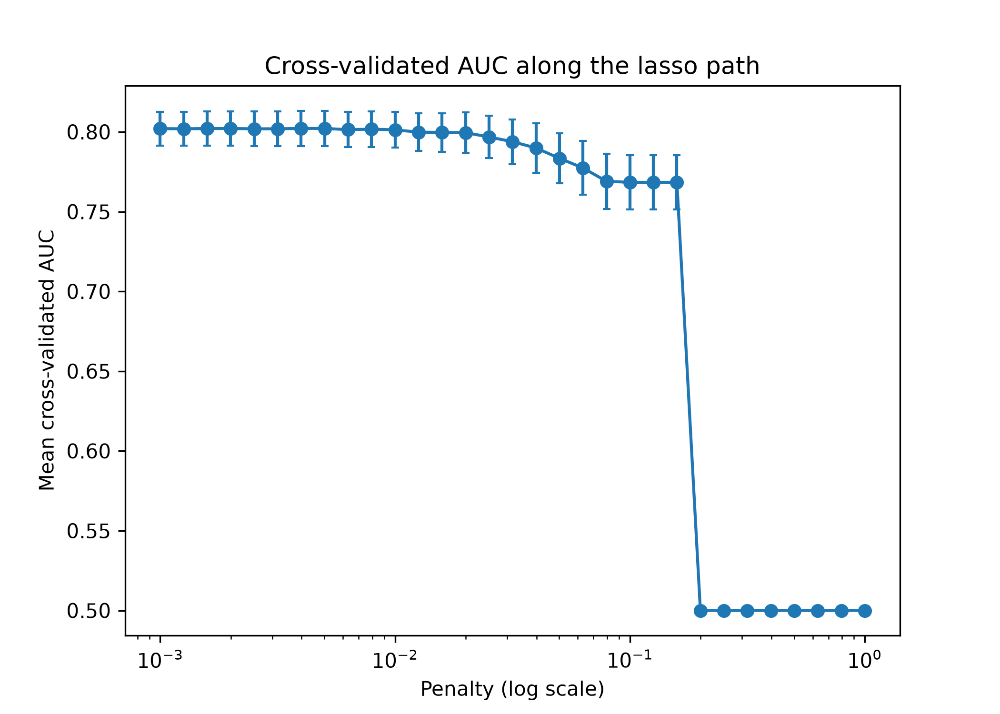

# Packages for this exercise. If one is missing, remove the # and run this line once:
# install.packages(c("tidyverse", "tidymodels", "glmnet"))
library(tidyverse)
library(tidymodels)
theme_set(theme_bw()) # white background for every plot
options(pillar.sigfig = 3) # show three significant figures in tablesExercise 5.5 — Regularisation: lasso and ridge logistic regression
ImportantA suggested addition, not part of the original module
This exercise has no page in the original version of the module. It covers the “Regularization” in the title of Day 5: the trees of Exercises 5.3 and 5.4 were restrained with hyperparameters, and this is the same idea for a regression model. Accept, rewrite or remove it; nothing else depends on it.
A logistic regression fitted without restraint chooses the coefficients that fit the training rows best. Regularisation adds a price for large coefficients, so that the model fits the training rows a little less closely in exchange for being simpler. With predictors standardised, the fitted coefficients minimise
\[\underbrace{-\frac{1}{n}\,\text{log-likelihood}}_{\text{misfit}} \;+\; \lambda \times \underbrace{\textstyle\sum_j |\beta_j|}_{\text{lasso}} \qquad\text{or}\qquad \ldots \;+\; \lambda \times \underbrace{\tfrac{1}{2}\textstyle\sum_j \beta_j^2}_{\text{ridge}}\]
The penalty \(\lambda\) is a hyperparameter: 0 gives the ordinary model, and the larger it is, the more the coefficients are pulled towards zero. The lasso pulls some of them all the way to zero, dropping those predictors; ridge shrinks all of them but drops none.
Theory: penalised regression; lasso and ridge; why the predictors must be standardised first; coefficient paths; choosing the penalty by cross-validation.
NoteThe plots are for looking at
The code for every plot is folded away just above it, in case you are curious, and all of it is in the code file linked at the top of each tab. You are not expected to write it yourself.
Download the R code from this chapter — every cell below, in page order, including the code for every plot, with the blanks left for you to fill in. Open it in Positron beside the page and run it a chunk at a time.
Packages and data
The same people, split and five predictors as Exercises 5.2 to 5.4, from data/diabetes.csv. The recipe standardises the predictors: the penalty treats every coefficient alike, which is only fair if the predictors are on the same scale.
diabetes <- read_csv("data/diabetes.csv") |>
select(pregnant, glucose, mass, pedigree, age, diabetes) |>
filter(glucose > 0, mass > 0) |> # remove the impossible zeros
mutate(diabetes = factor(diabetes, levels = c("neg", "pos")))
test_rows <- seq(1, nrow(diabetes), by = 5) # every fifth person is held back
train <- diabetes[-test_rows, ]
test <- diabetes[test_rows, ]
norm_rec <- recipe(diabetes ~ ., data = train) |>
step_normalize(all_numeric_predictors())Part 1 — Coefficient paths
In tidymodels a penalised logistic regression uses the glmnet engine with two arguments: penalty is \(\lambda\), and mixture chooses the kind of penalty, 1 for the lasso and 0 for ridge. glmnet fits the model for a whole sequence of penalties at once, the path; path_values sets that sequence, here 31 values from 0.001 to 1.
lambdas <- 10^seq(-3, 0, length.out = 31)
lasso_fit <- workflow() |>
add_model(logistic_reg(penalty = 0.01, mixture = 1) |>
set_engine("glmnet", path_values = lambdas)) |>
add_recipe(norm_rec) |>
fit(data = train)
lasso_path <- lasso_fit |>
extract_fit_engine() |> # the glmnet fit, with the whole path
tidy(return_zeros = TRUE) |> # keep the coefficients that are exactly zero
filter(term != "(Intercept)")
lasso_path |>
filter(step == 11) # the coefficients at one penalty#> # A tibble: 5 × 5
#> term step estimate lambda dev.ratio
#> <chr> <dbl> <dbl> <dbl> <dbl>
#> 1 pregnant 11 0 0.1 0.137
#> 2 glucose 11 0.555 0.1 0.137
#> 3 mass 11 0 0.1 0.137
#> 4 pedigree 11 0 0.1 0.137
#> 5 age 11 0 0.1 0.137Step 11 of the path, counted from the largest penalty, is \(\lambda = 0.1\): only glucose has a coefficient that is not zero. The whole path:
Code for this plot (optional)
ggplot(lasso_path, aes(x = lambda, y = estimate, colour = term)) +
geom_line(linewidth = 1) +
geom_hline(yintercept = 0, colour = "grey50") +
scale_x_log10() +
labs(x = "Penalty (log scale)", y = "Coefficient (per standard deviation)",
colour = NULL, title = "Lasso: coefficients drop out one by one")
Read the plot from right to left. At the largest penalties every coefficient is zero. As the penalty falls, glucose enters first, then body mass, and the others follow; at the smallest penalties the coefficients are close to those of the ordinary logistic regression in Exercise 5.2. The order in which predictors enter is one way of ranking them.
Now draw the same path for ridge:
# Replace every ______ below, then run this cell.
ridge_fit <- workflow() |>
add_model(logistic_reg(penalty = 0.01, mixture = ______) |>
set_engine("glmnet", path_values = lambdas)) |>
add_recipe(norm_rec) |>
fit(data = train)
ridge_path <- ridge_fit |>
extract_fit_engine() |>
tidy(return_zeros = TRUE) |> # keep the coefficients that are exactly zero
filter(term != "(Intercept)")
ggplot(ridge_path, aes(x = lambda, y = estimate, colour = term)) +
geom_line(linewidth = 1) +
geom_hline(yintercept = 0, colour = "grey50") +
scale_x_log10() +
labs(x = "Penalty (log scale)", y = "Coefficient (per standard deviation)",
colour = NULL, title = "Ridge: every coefficient shrinks, none drops out")
TipStuck?
mixture = 1 is the lasso; ridge is the other end of the scale.
ImportantLearning points
- The penalty pulls coefficients towards zero; the larger it is, the simpler the model.
- The lasso sets coefficients exactly to zero and so selects predictors; ridge shrinks them all and keeps every one.
- Standardise the predictors first, or the penalty treats them unequally.
Part 2 — Choosing the penalty by cross-validation
The penalty is a hyperparameter, so it is chosen exactly like the tree depth in Exercise 5.3: try a grid of values by 5-fold cross-validation on the training rows, and keep the one with the best AUC.
lasso_wf <- workflow() |>
add_model(logistic_reg(penalty = tune(), mixture = 1) |>
set_engine("glmnet", path_values = lambdas)) |>
add_recipe(norm_rec)
set.seed(123)
folds <- vfold_cv(train, v = 5, strata = diabetes)
lasso_res <- tune_grid(
lasso_wf,
resamples = folds,
grid = tibble(penalty = lambdas),
metrics = metric_set(roc_auc),
control = control_grid(event_level = "second")
)
show_best(lasso_res, metric = "roc_auc", n = 5)#> # A tibble: 5 × 7
#> penalty .metric .estimator mean n std_err .config
#> <dbl> <chr> <chr> <dbl> <int> <dbl> <chr>
#> 1 0.00126 roc_auc binary 0.805 5 0.0111 pre0_mod02_post0
#> 2 0.001 roc_auc binary 0.805 5 0.0111 pre0_mod01_post0
#> 3 0.00158 roc_auc binary 0.805 5 0.0112 pre0_mod03_post0
#> 4 0.00251 roc_auc binary 0.805 5 0.0111 pre0_mod05_post0
#> 5 0.00316 roc_auc binary 0.805 5 0.0109 pre0_mod06_post0Code for this plot (optional)
autoplot(lasso_res) +
labs(title = "Cross-validated AUC along the lasso path")
The best penalty is 0.00126 in R (cross-validated AUC 0.805) and 0.0040 in Python (C = 0.419, AUC 0.802); the folds differ between the languages, so the choice differs too. The difference does not matter: the curve is flat at about 0.80 for every penalty up to about 0.02, falls slowly as predictors drop out, and falls to 0.5, guessing, once the penalty (about 0.2 and above) sets every coefficient to zero.
ImportantLearning points
- The penalty is tuned like any other hyperparameter: a grid, cross-validation on the training rows, the best AUC.
- A flat curve means the data do not care much about the penalty: then prefer the simpler model it allows.
Part 3 — Does the penalty help on the test rows?
Finalise the lasso with the chosen penalty, and fit the unpenalised model of Exercise 5.2 for comparison:
best_penalty <- select_best(lasso_res, metric = "roc_auc")
best_penalty#> # A tibble: 1 × 2
#> penalty .config
#> <dbl> <chr>
#> 1 0.00126 pre0_mod02_post0final_lasso_fit <- finalize_workflow(lasso_wf, best_penalty) |>
fit(data = train)
tidy(final_lasso_fit)#> # A tibble: 6 × 3
#> term estimate penalty
#> <chr> <dbl> <dbl>
#> 1 (Intercept) -0.699 0.00126
#> 2 pregnant 0.229 0.00126
#> 3 glucose 1.01 0.00126
#> 4 mass 0.455 0.00126
#> 5 pedigree 0.212 0.00126
#> 6 age 0.147 0.00126plain_fit <- workflow() |>
add_model(logistic_reg() |> set_engine("glm")) |>
add_recipe(norm_rec) |>
fit(data = train)Compute the test AUC of both:
# Replace every ______ below, then run this cell.
predict(final_lasso_fit, new_data = test, type = "prob") |>
bind_cols(test) |>
roc_auc(truth = diabetes, .pred_pos, event_level = "second")
predict(______, new_data = test, type = "prob") |>
bind_cols(test) |>
roc_auc(truth = diabetes, ______, event_level = "second")Question! With 600 people and five predictors the penalty buys little. In what kind of data set would you expect it to matter much more?
ImportantLearning points
- With many people and few predictors, the unpenalised model is already stable and the penalty changes little.
- Regularisation pays when there are many predictors for the number of people, as in omics data, where the lasso’s variable selection is often the point.
Download the Python code from this chapter — every cell below, in page order, including the code for every plot, with the blanks left for you to fill in. Open it in Positron beside the page and run it a cell at a time.
Packages and data
# Packages for this exercise. If one is missing, install it once from a terminal
# (in a Jupyter notebook, type %pip instead of pip):
# pip install pandas numpy matplotlib scikit-learn
import pandas as pd
import numpy as np
import matplotlib.pyplot as plt
from sklearn.pipeline import Pipeline
from sklearn.preprocessing import StandardScaler
from sklearn.linear_model import LogisticRegression
from sklearn.model_selection import GridSearchCV
from sklearn.metrics import roc_auc_scoreThe same people, split and five predictors as Exercises 5.2 to 5.4, from data/diabetes.csv. The pipelines standardise the predictors: the penalty treats every coefficient alike, which is only fair if the predictors are on the same scale.
diabetes = pd.read_csv("data/diabetes.csv")
diabetes = diabetes[["pregnant", "glucose", "mass", "pedigree", "age", "diabetes"]]
diabetes = diabetes[(diabetes["glucose"] > 0) & (diabetes["mass"] > 0)] # remove the impossible zeros
diabetes = diabetes.reset_index(drop=True)
diabetes["diabetes"] = (diabetes["diabetes"] == "pos").astype(int) # 1 = pos, 0 = neg
is_test = diabetes.index % 5 == 0 # every fifth person is held back
train = diabetes[~is_test]
test = diabetes[is_test]
predictors = ["pregnant", "glucose", "mass", "pedigree", "age"]Part 1 — Coefficient paths
In scikit-learn a penalised logistic regression is a LogisticRegression() with two arguments: l1_ratio chooses the kind of penalty, 1 for the lasso and 0 for ridge, and C sets its size the other way round: \(C = 1 / (n\lambda)\), so a large C means a small penalty. The saga solver handles both kinds. Fit the lasso for 31 penalties from 0.001 to 1, one at a time:
lambdas = 10 ** np.linspace(-3, 0, 31)
n = len(train)
rows = []
for lam in lambdas:
lasso = Pipeline([
("scale", StandardScaler()),
("model", LogisticRegression(l1_ratio=1, C=1 / (n * lam), solver="saga",
max_iter=10000, random_state=123)),
])
lasso = lasso.fit(train[predictors], train["diabetes"])
for name, coef in zip(predictors, lasso["model"].coef_[0]):
rows.append({"lambda": lam, "term": name, "estimate": coef})
lasso_path = pd.DataFrame(rows)
lasso_path[lasso_path["lambda"] == lambdas[20]].round(3) # the coefficients at one penalty#> lambda term estimate
#> 100 0.1 pregnant 0.000
#> 101 0.1 glucose 0.554
#> 102 0.1 mass 0.000
#> 103 0.1 pedigree 0.000
#> 104 0.1 age 0.000Position 20 counted from the smallest penalty (Python counts from 0) is \(\lambda = 0.1\): only glucose has a coefficient that is not zero. The whole path:
Code for this plot (optional)
fig, ax = plt.subplots()
for name in predictors:
rows = lasso_path[lasso_path["term"] == name]
ax.plot(rows["lambda"], rows["estimate"], linewidth=2, label=name)
ax.axhline(0, color="grey")
ax.set_xscale("log")
ax.set_xlabel("Penalty (log scale)")
ax.set_ylabel("Coefficient (per standard deviation)")
ax.set_title("Lasso: coefficients drop out one by one")
ax.legend()
plt.show()
Read the plot from right to left. At the largest penalties every coefficient is zero. As the penalty falls, glucose enters first, then body mass, and the others follow; at the smallest penalties the coefficients are close to those of the ordinary logistic regression in Exercise 5.2. The order in which predictors enter is one way of ranking them.
Now draw the same path for ridge:
# Replace every ______ below, then run this cell.
rows = []
for lam in lambdas:
ridge = Pipeline([
("scale", StandardScaler()),
("model", LogisticRegression(l1_ratio=______, C=1 / (n * lam), solver="saga",
max_iter=10000, random_state=123)),
])
ridge = ridge.fit(train[predictors], train["diabetes"])
for name, coef in zip(predictors, ridge["model"].coef_[0]):
rows.append({"lambda": lam, "term": name, "estimate": coef})
ridge_path = pd.DataFrame(rows)
fig, ax = plt.subplots()
for name in predictors:
path_rows = ridge_path[ridge_path["term"] == name]
ax.plot(path_rows["lambda"], path_rows["estimate"], linewidth=2, label=name)
ax.axhline(0, color="grey")
ax.set_xscale("log")
ax.set_xlabel("Penalty (log scale)")
ax.set_ylabel("Coefficient (per standard deviation)")
ax.set_title("Ridge: every coefficient shrinks, none drops out")
ax.legend()
plt.show()
TipStuck?
l1_ratio=1 is the lasso; ridge is the other end of the scale.
ImportantLearning points
- The penalty pulls coefficients towards zero; the larger it is, the simpler the model.
- The lasso sets coefficients exactly to zero and so selects predictors; ridge shrinks them all and keeps every one.
- Standardise the predictors first, or the penalty treats them unequally.
Part 2 — Choosing the penalty by cross-validation
The penalty is a hyperparameter, so it is chosen exactly like the tree depth in Exercise 5.3: try a grid of values by 5-fold cross-validation on the training rows, and keep the one with the best AUC. The grid is written in terms of C.
lasso_pipe = Pipeline([
("scale", StandardScaler()),
("model", LogisticRegression(l1_ratio=1, solver="saga", max_iter=10000, random_state=123)),
])
lasso_search = GridSearchCV(lasso_pipe, param_grid={"model__C": 1 / (n * lambdas)},
cv=5, scoring="roc_auc")
lasso_search = lasso_search.fit(train[predictors], train["diabetes"])
lasso_results = pd.DataFrame(lasso_search.cv_results_)
lasso_results["lambda"] = 1 / (n * lasso_results["param_model__C"].astype(float))
lasso_results = lasso_results[["lambda", "param_model__C", "mean_test_score", "std_test_score"]]
lasso_results.sort_values("mean_test_score", ascending=False).head(5).round(4)#> lambda param_model__C mean_test_score std_test_score
#> 6 0.0040 0.4186 0.8022 0.0247
#> 7 0.0050 0.3325 0.8022 0.0249
#> 2 0.0016 1.0516 0.8021 0.0239
#> 3 0.0020 0.8353 0.8021 0.0241
#> 0 0.0010 1.6667 0.8020 0.0236Code for this plot (optional)
fig, ax = plt.subplots()
ax.errorbar(lasso_results["lambda"], lasso_results["mean_test_score"],
yerr=lasso_results["std_test_score"] / np.sqrt(5), marker="o", capsize=2)
ax.set_xscale("log")
ax.set_xlabel("Penalty (log scale)")
ax.set_ylabel("Mean cross-validated AUC")
ax.set_title("Cross-validated AUC along the lasso path")
plt.show()
The best penalty is 0.00126 in R (cross-validated AUC 0.805) and 0.0040 in Python (C = 0.419, AUC 0.802); the folds differ between the languages, so the choice differs too. The difference does not matter: the curve is flat at about 0.80 for every penalty up to about 0.02, falls slowly as predictors drop out, and falls to 0.5, guessing, once the penalty (about 0.2 and above) sets every coefficient to zero.
ImportantLearning points
- The penalty is tuned like any other hyperparameter: a grid, cross-validation on the training rows, the best AUC.
- A flat curve means the data do not care much about the penalty: then prefer the simpler model it allows.
Part 3 — Does the penalty help on the test rows?
The search has refitted the lasso with the chosen penalty on all 600 training rows. Fit the unpenalised model of Exercise 5.2 for comparison (C=np.inf):
print(lasso_search.best_params_)#> {'model__C': np.float64(0.41864773858492993)}final_lasso = lasso_search.best_estimator_
print(pd.Series(final_lasso["model"].coef_[0], index=predictors).round(3))#> pregnant 0.216
#> glucose 0.989
#> mass 0.437
#> pedigree 0.196
#> age 0.141
#> dtype: float64
plain = Pipeline([
("scale", StandardScaler()),
("model", LogisticRegression(C=np.inf)),
])
plain = plain.fit(train[predictors], train["diabetes"])Compute the test AUC of both:
# Replace every ______ below, then run this cell.
lasso_prob = final_lasso.predict_proba(test[predictors])[:, 1]
plain_prob = ______.predict_proba(test[predictors])[:, 1]
print("lasso, test AUC: ", round(roc_auc_score(test["diabetes"], lasso_prob), 3))
print("unpenalised, test AUC:", round(roc_auc_score(test["diabetes"], ______), 3))Question! With 600 people and five predictors the penalty buys little. In what kind of data set would you expect it to matter much more?
ImportantLearning points
- With many people and few predictors, the unpenalised model is already stable and the penalty changes little.
- Regularisation pays when there are many predictors for the number of people, as in omics data, where the lasso’s variable selection is often the point.
Stretch
NoteStretch — the noise test
Add five columns of pure random noise to the training and test rows (rnorm() in R, np.random.default_rng(1).normal() in Python), refit the unpenalised model and the tuned lasso on all ten predictors, and compare. Which model gives the noise columns coefficients, and which test AUC suffers more?